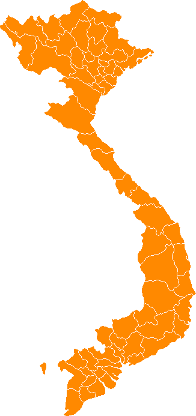

ABOUT VIETNAMESE CUISINE
VIETNAMESE CUISINE CONTAINS THIS BRILLIANT BALLANCE OF
AROMATICS, SPICENESS, SWEETNESS, SOURNESS, AND FISH-SAUCINESS.
To really understand the flavors of Vietnam, it's helpful to look at a map first
Shaped like an elongated S, the skinny country is about the size of Italy, with China to the north, Laos and Cambodia to the west, and the South China Sea to the east. The 3,000-kilometer coastline snakes down, marked by Hanoi in the north, the rugged central highlands, the sprawling Hoi Chi Minh City (aka Saigon) in the south, and the fertile Mekong delta ("the rice bowl of the country") at the bottom hook.

Northern and Southern cuisines are two of Vietnam’s main regional cuisines. They do share some similarities but also differentiate from each other. The foods in these two regions have unique characteristics and satisfy all walks of life.
NORTH VIETNAM
Tap To Learn More

SOUTH VIETNAM
Tap To Learn More

HERE COMES THE FRENCH
It's hard to talk about Vietnamese food without mentioning French colonization, which began with missionaries arriving in the 18th century and not ending until 1954. Clearly it had a lasting effect on the country, the people, the architecture, the land, and the flavors. Most obvious might be the banh mi, with its crusty French baguette as the foundation. But the Vietnamese have taken this sandwich and made it entirely their own with grilled pork, fish patties, sardines, cilantro, chili-spiked pickled carrots and other fillings.

PHO-NOMENON
Pho (pronounced fuh, like "fun" without the "n") is another example of French colonialism leaving its mark. It is considered a national dish of Vietnam and can be celebrated on December 12, National Day of Pho. The soup dish is a blend of Vietnamese rice noodles and French-minded meat broths. One theory contends that pho is a phonetic imitation of the French word "feu" (fire), as in pot-au-feu. Some say French colonialists slaughtered a bunch of cattle in Vietnam to satisfy their appetite for steak, and the ever-resourceful Vietnamese cooks used the scraps, bones, and any other rejected bits to create pho.

ICONIC INGREDIENTS
Travel all over Vietnam and you'll quickly find two universal themes. Rice and fish sauce.
RICE
Tap To Learn More
FISH SAUCE
Tap To Learn More

HOUSEHOLD ESSENTIALS
Vietnamese food makes extensive use of fresh herbs, spices, and aromatics. Going into a steamy pot of pho, wrapped into spring rolls, or even enclosed with a banh xeo pancake.
Soy Sauce

fish sauce
Oyster Sauce
Rock Sugar

Thai Basil
Mint
Green Onions
cilantro
Birdseye Chile
Fried Shallots